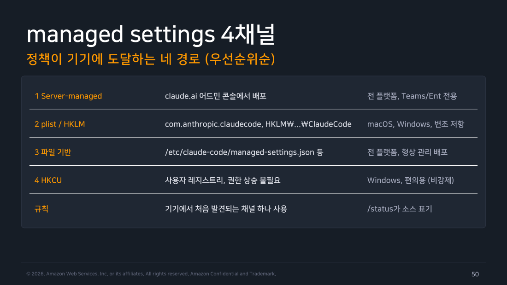
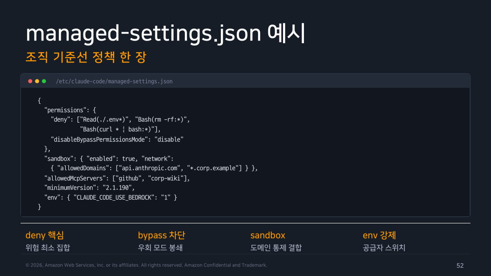
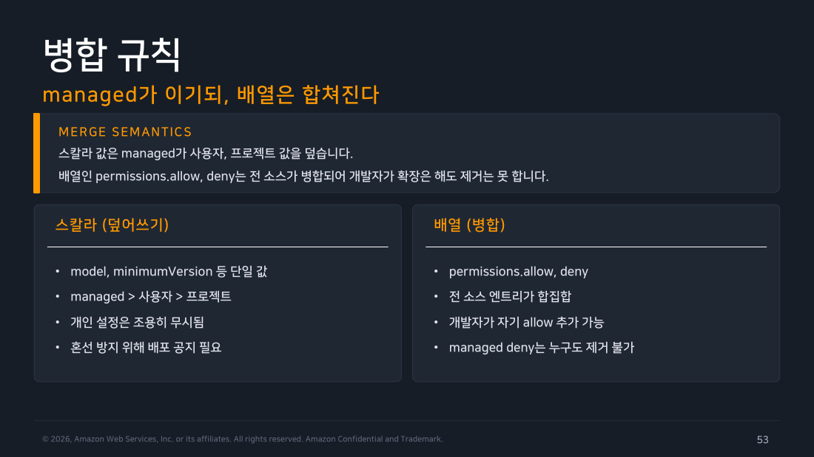
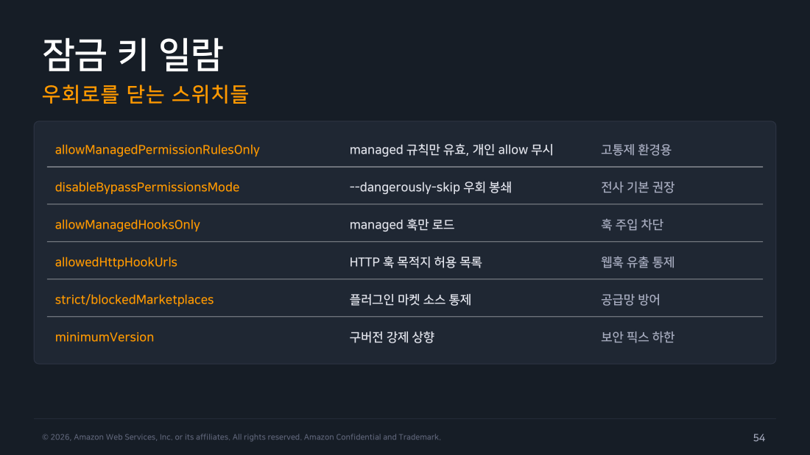

Part 5 — 거버넌스와 정책¶
한 줄 요약¶
managed settings(관리자가 개인이 고칠 수 없는 시스템 경로에 배포하는 설정 파일)는 조직이 배포하는 최상위 설정 계층입니다. 이 설정이 기기에 도착하는 통로는 네 가지인데, 넷을 다 합치는 게 아니라 가장 먼저 발견되는 하나만 적용됩니다. 그리고 개인 설정과 충돌할 때는 값의 생김새에 따라 처리가 갈립니다. 값이 하나뿐인 항목은 조직 설정이 개인 설정을 덮어쓰고, 목록(리스트) 형태인 권한 항목은 양쪽이 합쳐집니다. 그 결과 개발자는 허용 목록을 넓힐 수는 있어도, 조직이 걸어 둔 금지를 지울 수는 없습니다.
왜 알아야 하나¶
Part 4까지는 "무엇을 켜고 끌 수 있는가"를 봤습니다. 하지만 사내에 배포하는 순간 질문이 달라집니다. 끄라고 안내한 걸 누군가 다시 켜면 어떻게 되는가?
권한 설정을 개인 ~/.claude/settings.json이나 프로젝트 .claude/settings.json에 두는 한, 그건 정책이 아니라 권고입니다. 그 파일을 읽을 수 있는 사람은 그 파일을 고칠 수도 있으니까요. 보안 감사에서 "이 통제는 어떻게 강제됩니까"라고 물었을 때 "팀 위키에 적어 뒀습니다"라고 답하면 통제로 인정받지 못합니다.
managed settings는 이 간극을 메우는 계층입니다. 핵심은 파일의 형식이 아니라 그 파일이 놓인 위치를 누가 고칠 수 있느냐입니다. 개인 계정으로는 손댈 수 없는 곳에 정책을 두면, 그때부터 안내문이 아니라 강제 규칙이 됩니다. 그런 위치가 세 종류 있습니다.
- 시스템 디렉토리는 파일을 고치려면 관리자 권한(
sudo같은)이 필요한 경로입니다. - MDM이 관리하는 저장소는 MDM(Mobile Device Management, 회사가 직원 기기 설정을 원격으로 배포·관리하는 시스템)이 운영체제 수준에서 값을 심어 두는 자리입니다.
- 어드민 콘솔은 파일이 기기에 없고, 로그인할 때 서버에서 내려받는 방식입니다.
이번 파트는 그 위치가 각각 어디이고, 여러 계층의 설정이 충돌할 때 어떤 규칙으로 합쳐지며, 규칙 바깥으로 빠져나가는 우회로를 무엇으로 닫는지를 다룹니다.
1. 정책이 기기에 도달하는 네 경로¶
조직 정책은 네 가지 채널(정책이 개발자 노트북까지 전달되는 통로) 중 하나로 도착합니다. 통로가 여러 개인 건 조직마다 인프라 사정이 달라서입니다. MDM이 잘 깔린 조직, 형상 관리 도구(서버·PC 설정을 코드로 정의해 자동으로 뿌리는 도구)로 파일을 배포하는 조직, 아무 인프라 없이 웹 콘솔만 쓰고 싶은 조직이 각각 다른 답을 필요로 합니다.
-
Server-managed: claude.ai 어드민 콘솔에서 배포합니다. 기기에 아무것도 미리 설치할 필요가 없고 모든 운영체제에서 동작하지만, Teams·Enterprise 플랜에서만 쓸 수 있습니다.
-
plist / HKLM: 운영체제가 직접 관리하는 설정 저장소에 정책을 씁니다. macOS는
com.anthropic.claudecode라는 plist 도메인(macOS가 앱 설정을 보관하는 시스템 저장소), Windows는HKLM\...\ClaudeCode레지스트리 키(HKLM은 기기 전체에 적용되는 영역이라 관리자 권한이 있어야 고칠 수 있습니다)를 씁니다. 사용자가 임의로 바꾸기 가장 어려운 축에 듭니다. -
파일 기반:
/etc/claude-code/managed-settings.json같은 시스템 경로에 JSON 파일을 둡니다. 모든 운영체제에서 동작하고, Ansible·Chef처럼 이미 쓰고 있는 형상 관리 파이프라인에 그대로 얹기 좋습니다. -
HKCU: Windows 레지스트리 중 로그인한 사용자 본인에게만 적용되는 영역입니다. 관리자 권한 없이 배포할 수 있어 편하지만, 바로 그 이유로 사용자가 직접 고칠 수 있어 강제력이 없습니다. 편의용으로만 씁니다.
여기서 가장 자주 오해가 생기는 게 우선순위의 의미입니다. 이건 "네 채널의 값을 순서대로 겹쳐 쌓는다"는 뜻이 아닙니다. Claude Code는 위 순서대로 채널을 훑다가 처음 발견한 하나만 채택하고, 나머지 채널은 아예 열어 보지도 않습니다.
flowchart TD
S["세션 시작<br/>조직 정책 탐색"] --> C1{"1. Server-managed<br/>어드민 콘솔 배포가 있는가"}
C1 -->|"있음"| U1["이 채널만 적용<br/>/status → (remote)"]
C1 -->|"없음"| C2{"2. plist / HKLM<br/>OS 관리 저장소에 있는가"}
C2 -->|"있음"| U2["이 채널만 적용<br/>/status → (plist) 또는 (HKLM)"]
C2 -->|"없음"| C3{"3. 파일 기반<br/>managed-settings.json이 있는가"}
C3 -->|"있음"| U3["이 채널만 적용<br/>/status → (file)"]
C3 -->|"없음"| C4{"4. HKCU<br/>사용자 레지스트리에 있는가"}
C4 -->|"있음"| U4["이 채널만 적용<br/>/status → (HKCU)<br/>사용자 변경 가능 · 비강제"]
C4 -->|"없음"| N["조직 정책 없음<br/>사용자 · 프로젝트 설정만 동작"]
style S fill:#e3f2fd,stroke:#1976d2,color:#000
style C1 fill:#fff8e1,stroke:#f9a825,color:#000
style C2 fill:#fff8e1,stroke:#f9a825,color:#000
style C3 fill:#fff8e1,stroke:#f9a825,color:#000
style C4 fill:#fff8e1,stroke:#f9a825,color:#000
style U1 fill:#e8f5e9,stroke:#388e3c,color:#000
style U2 fill:#e8f5e9,stroke:#388e3c,color:#000
style U3 fill:#e8f5e9,stroke:#388e3c,color:#000
style U4 fill:#fbe9e7,stroke:#d84315,color:#000
style N fill:#eceff1,stroke:#546e7a,color:#000이 "하나만 쓴다" 규칙은 채널을 갈아탈 때 사고가 나기 쉬운 지점입니다. 파일 기반으로 잘 돌던 조직이 Server-managed를 새로 도입한다고 해봅시다. 콘솔에는 일단 최소한의 설정만 올려 뒀습니다. 그 순간 Server-managed가 1순위이므로 채택되고, 파일에 있던 나머지 정책은 합쳐지는 게 아니라 통째로 무시됩니다. 두 채널을 함께 두려면, 새 채널 쪽에도 기존 정책 전체가 들어 있어야 합니다.
다만 이 "하나만"에는 예외가 세 가지 있습니다.
-
env블록은 예외입니다.env는 환경 변수(프로그램이 실행될 때 참조하는 이름=값 쌍)를 지정하는 자리인데, v2.1.223부터 관리자 소스끼리는 변수 하나하나 단위로 합쳐집니다. 같은 변수를 여러 소스가 정의하면 우선순위가 높은 쪽이 이기고, 높은 소스가 아예 언급하지 않은 변수는 낮은 소스의 값으로 채워집니다. -
채널 간 잠금 키(cross-source lock key)도 예외입니다. 잠금 키는 관리자가 우회로를 닫으려고 거는 종류의 키를 말합니다(§5에서 여섯 개를 자세히 봅니다). 이 문서에서 다루는 샌드박스 허용 목록 잠금이 그런 예입니다. 이런 키는 HKCU를 뺀 관리자 소스 중 어느 하나라도 설정해 두면 그대로 적용됩니다. 1순위 채널이 아니어도 효력이 생긴다는 뜻입니다.
-
policyHelper가 구성돼 있으면 그 출력이 전부를 대체합니다. Server-managed를 포함한 다른 모든 관리자 소스가 통째로 밀려납니다.
즉 "처음 발견한 하나만"은 값이 하나뿐인 항목과 목록 항목 대부분에는 맞는 규칙이지만, 예외 없는 절대 규칙은 아닙니다.

▲ 교재 슬라이드 50 — managed settings 4채널
현장 메모
이 구조는 AWS의 SCP(Service Control Policy, 조직 상위에서 하위 계정의 권한 한도를 정하는 정책)나 Windows의 GPO(Group Policy Object, 도메인 관리자가 사내 PC 설정을 일괄 강제하는 장치)와 발상이 같습니다. "상위에서 내려온 금지는 하위에서 되돌릴 수 없다"는 원칙이 동일하고, 고장 나는 방식도 같습니다. 정책 내용보다 정책 전달 경로가 더 자주 고장 납니다. 정책 파일을 검토하는 것만큼이나 "이 기기에 정말 도달했는가"를 확인하는 절차(§11)에 비중을 두세요.
2. Server-managed — 인프라 없이 콘솔에서¶
네 채널 중 Server-managed만 동작 방식이 다릅니다. 나머지 셋은 관리자가 기기 안에 파일이나 설정값을 미리 넣어 둬야 합니다. Server-managed는 반대로 Claude Code가 서버에서 직접 받아 옵니다.
받아 오는 시점은 로그인할 때입니다. 사용자가 조직 계정으로 로그인하면 그 시점에 정책이 내려오고, 세션이 살아 있는 동안 매시간 자동으로 갱신됩니다. 정책을 바꿔도 기기를 재부팅하거나 MDM 배포를 기다릴 필요가 없다는 뜻입니다. 한 시간 안에 반영됩니다. 보안 사고가 나서 "지금 당장 특정 MCP 서버(Claude에 외부 도구를 붙여 주는 확장으로, §6에서 자세히 다룹니다)를 차단해야 하는" 상황이라면 이 갱신 주기가 큰 차이를 만듭니다.
대신 제약이 두 가지 있습니다.
- Teams·Enterprise 플랜에서만 쓸 수 있습니다.
- 로그인을 통해 내려오므로, 조직 계정으로 로그인하지 않은 사용자는 아예 받지 못합니다. Bedrock이나 Vertex(AWS·Google이 제공하는 Claude 모델 접속 경로) 쪽으로 Claude Code를 쓰는 사람이 조직 안에 섞여 있다면, 그 사람들에게는 이 채널이 닿지 않습니다.
그래서 계정 종류가 섞인 조직에서는 "Server-managed를 주 채널로 쓰되, 파일 기반이나 plist도 예비로 함께 배포" 하는 게 정석입니다. 다만 §1의 "처음 발견되는 하나만" 규칙 때문에 주의할 게 있습니다. 예비 채널은 부족한 부분만 채우는 보조 설정이 아니라, 그것 하나만 읽어도 정책이 완결되는 전문이어야 합니다. 두 채널의 내용을 맞춰 두지 않으면, 계정 종류에 따라 사람마다 받는 정책이 달라집니다.
3. 조직 기준선 정책 한 장¶
정책 파일은 길 필요가 없습니다. 실무에서 잘 도는 managed 설정은 대개 한 화면 안에 들어오고, 담기는 항목도 거의 정해져 있습니다.
가장 먼저 들어가는 건 금지 목록(deny)의 최소 집합입니다. rm -rf 계열의 파일 삭제 명령, .env처럼 비밀번호·API 키가 들어 있는 파일 읽기, curl ... | bash처럼 인터넷에서 받은 스크립트를 그대로 실행하는 형태처럼 어느 팀에 물어봐도 "이건 막아야죠"라고 답할 것들만 고릅니다. 그 옆에 disableBypassPermissionsMode를 걸어 권한 검사를 통째로 건너뛰는 모드를 봉쇄합니다. 금지 목록을 아무리 잘 짜도 우회 스위치가 열려 있으면 소용이 없습니다. 이 둘은 한 쌍으로 다루세요.
그다음이 샌드박스와 네트워크 통제의 결합입니다. Part 4에서 본 샌드박스(명령을 격리된 공간에서 실행해 바깥에 영향을 못 주게 하는 장치)를 켜고, allowedDomains로 접속 가능한 도메인을 Claude API 주소와 사내 도메인으로만 제한합니다. 그러면 금지 목록이 미처 예상하지 못한 명령이 실행되더라도 데이터가 나갈 곳이 없습니다. 권한이 "무엇을 실행할 수 있는가"를 정한다면, 샌드박스는 "실행된 것이 어디까지 닿는가"를 정합니다. 서로를 대체하는 게 아니라 보완합니다.
마지막으로 환경 자체를 고정하는 항목들이 붙습니다.
allowedMcpServers는 연결할 수 있는 외부 확장을 승인된 목록으로 좁힙니다.requiredMinimumVersion은 보안 수정이 들어간 버전보다 낮으면 아예 실행되지 않게 하한선을 긋습니다.env는CLAUDE_CODE_USE_BEDROCK같은 공급자 선택 변수를 조직이 정한 값으로 못박습니다.
특히 env 강제는 폐쇄망(외부 인터넷과 분리된 사내망)이나 규제 환경에서 중요합니다. 개인이 설정을 바꿔 다른 공급자로 접속하면 데이터가 의도치 않은 경로로 나갈 수 있는데, 그 가능성 자체를 없애는 지점이기 때문입니다.

▲ 교재 슬라이드 52 — managed-settings.json 예시
Note
정책 파일에 담지 말아야 할 것도 있습니다. managed 계층은 "전 조직에 공통이면서, 개인이 바꾸면 안 되는 것"만 담는 자리입니다. 특정 프로젝트에서만 필요한 허용 규칙이나 팀마다 다른 모델 선택을 여기 넣으면 어떻게 될까요. 예외가 하나 생길 때마다 조직 전체 정책을 다시 배포해야 합니다. 그런 항목은 프로젝트 계층으로 내려보내세요.
4. 병합 규칙 — managed가 이기되, 배열은 합쳐진다¶
이 챕터에서 가장 오해가 잦고, 실제 사고와 가장 가까운 개념입니다. 하지만 규칙 자체는 두 개뿐입니다. 하나씩 예시와 함께 보겠습니다.
설정은 여러 군데에 흩어져 있습니다. 조직이 배포한 managed 파일, 프로젝트 폴더의 .claude/settings.json, 개인 홈 디렉토리의 ~/.claude/settings.json. 이 파일들이 같은 항목을 서로 다르게 지정하면 Claude Code가 하나로 합쳐야 합니다. 이때 항목의 값이 어떻게 생겼느냐에 따라 합치는 방식이 완전히 달라집니다. 값이 하나뿐인 항목은 한쪽이 이기고, 목록 형태의 항목은 양쪽이 더해집니다.
스칼라는 덮어쓰기¶
스칼라(scalar)는 값이 하나뿐인 항목을 말합니다. model(쓸 모델 이름)이나 requiredMinimumVersion(최소 버전)처럼 답이 딱 하나여야 하는 설정입니다. "model": "sonnet"과 "model": "opus"를 동시에 만족시킬 방법은 없습니다. 그래서 이런 항목은 정해진 순위대로 이긴 쪽 값 하나만 남고, 나머지는 버려집니다.
순위는 이렇습니다. 가장 센 쪽부터 managed → CLI 인자(명령을 실행할 때 붙이는 옵션) → Local(개인의 프로젝트별 설정) → Project(프로젝트 공용 설정) → User(개인 전역 설정) 순입니다. managed가 항상 이깁니다.
예를 들어 managed에 "model": "sonnet", 개인 설정에 "model": "opus"가 있다면 최종 값은 sonnet입니다. 개인 설정의 opus는 흔적 없이 사라집니다.
Warning
자주 거꾸로 아는 지점입니다. "내 개인 설정이 프로젝트 설정보다 세겠지"라고 생각하기 쉬운데 반대입니다. User(개인 전역 설정)는 이 다섯 계층 중 가장 약합니다. 개인 설정으로 팀 규칙을 덮어쓸 수 있다고 기대하면 실제 동작과 어긋납니다.
실무에서 성가신 건 지는 쪽이 아무 소리도 내지 않는다는 점입니다. 개발자가 자기 설정에 model을 적어 둬도 경고나 오류가 뜨지 않습니다. 그냥 조용히 무시되고 조직이 정한 모델이 뜹니다. 본인 눈에는 "설정이 안 먹는 버그"로 보입니다. 그래서 스칼라 항목을 managed로 고정할 때는 배포 공지가 사실상 필수입니다. "이 항목은 조직에서 고정했으니 개인 설정은 무시됩니다"를 미리 알리지 않으면 문의가 그대로 헬프데스크로 갑니다.
배열은 병합¶
배열(array)은 값을 여러 개 담는 목록입니다. permissions.allow(허용할 명령 목록)와 permissions.deny(금지할 명령 목록)가 여기 해당합니다. 목록은 굳이 하나만 고를 이유가 없습니다. 그래서 모든 소스의 항목이 전부 합쳐집니다.
managed가 "deny": ["Read(./.env*)"]를 갖고 있고 개발자가 "deny": ["Bash(curl:*)"]를 추가했다면, 최종 금지 목록에는 둘 다 남습니다. 허용 목록도 마찬가지입니다. managed의 허용과 프로젝트의 허용이 함께 유효합니다.
왜 이렇게 설계했는지가 중요합니다. 배열도 스칼라처럼 덮어쓰기였다면 둘 중 하나가 됩니다.
- managed가 이기는 경우, 개발자는 자기 프로젝트에 필요한 빌드 명령 하나를 허용 목록에 넣으려고 조직 정책 변경을 요청해야 합니다. 정책이 생산성의 병목이 됩니다.
- 아래쪽이 이기는 경우, 개발자가 자기 파일에
"deny": []한 줄만 적으면 조직의 모든 금지가 사라집니다. 정책이 통제로서 무의미해집니다.
병합은 이 딜레마를 푼 답입니다. 개발자는 허용을 자유롭게 추가할 수 있지만, managed의 금지는 누구도 지울 수 없습니다. 넓히는 방향은 열려 있고 좁히는 방향은 막혀 있습니다. 이 비대칭이 "개인이 못 바꾸는 것을 설계한다"는 이 파트의 핵심입니다.
여기서 따라오는 결론이 하나 있습니다. managed 금지 목록에 넣은 규칙은 사실상 되돌릴 수 없다고 보고 신중히 골라야 합니다. 개발자 쪽에서 예외를 만들 방법이 없기 때문입니다. 너무 넓은 패턴을 금지에 넣으면 정당한 작업까지 막히고, 푸는 방법이 "정책 변경 PR을 올려 승인받기"밖에 없습니다. §9에서 다룰 "deny는 좁고 단단하게"라는 원칙이 여기서 나옵니다.
세 소스가 만났을 때 무슨 일이 벌어지는가¶
두 규칙을 실제 파일에 적용해 보겠습니다. 조직 기준선이 managed에, 팀 규칙이 프로젝트 설정에, 본인 취향이 개인 설정에 있는 흔한 배치입니다.
managed (조직 배포)
{
"model": "sonnet",
"permissions": {
"deny": ["Read(./.env*)"],
"allow": ["Bash(git status:*)"]
}
}
project (.claude/settings.json)
user (~/.claude/settings.json)
세 파일이 합쳐지면 항목마다 이렇게 정리됩니다.
-
model은sonnet이 됩니다. 값이 하나뿐인 스칼라라 managed가 이깁니다. 개인 설정의"model": "opus"는 오류 메시지 없이 조용히 무시됩니다. 이 사용자 눈에는 "설정이 안 먹는 버그"로 보일 겁니다. -
allow는 네 개가 전부 살아 있습니다. managed의
git status, 프로젝트의npm test와npm run build, 개인의gh pr view. 목록이라 세 소스가 전부 더해집니다. 개발자가 자기 작업에 필요한 명령을 추가하는 데 아무 마찰이 없습니다. -
deny에는
Read(./.env*)가 그대로 남습니다. 개인 설정에"deny": []라고 적혀 있어도 마찬가지입니다. 빈 목록은 "금지를 전부 지우겠다"는 선언이 아니라 "내가 더 추가할 금지는 없다" 는 뜻일 뿐입니다. 빈 목록을 더해도 managed 항목은 사라지지 않습니다.
마지막 항목이 이 절의 핵심입니다. 덮어쓰기라고 착각하고 "deny": []를 적어 조직 정책을 지우려는 시도는 아무 효과가 없습니다. "목록은 더한다"는 규칙 하나가 이런 우회 시도 전체를 무의미하게 만듭니다.

▲ 교재 슬라이드 53 — 병합 규칙
Warning
allow도 합쳐진다는 걸 잊지 마세요. deny가 합쳐지는 건 통제가 강해지는 방향이라 직관적입니다. 하지만 allow가 합쳐지는 건 반대 방향입니다. 개발자가 프로젝트 설정에 아주 넓은 허용 패턴을 넣으면 그것도 그대로 유효해집니다. 조직이 허용 목록까지 통제해야 하는 환경이라면 §5의 allowManagedPermissionRulesOnly가 필요합니다.
5. 잠금 키 — 우회로를 닫는 스위치들¶
권한 규칙을 잘 짜도, 그 규칙 바깥으로 빠져나가는 샛길이 남아 있으면 통제가 성립하지 않습니다. 잠금 키는 그 샛길을 하나씩 닫는 스위치입니다. 관리자가 managed 설정에 걸어 두면 개인이 되돌릴 수 없는 방향으로 동작해서 "잠금"이라고 부릅니다. 여섯 개가 있고, 무엇을 잠그느냐로 묶어 보면 외우기 쉽습니다.
권한 규칙 자체를 잠그는 두 개가 있습니다.
-
allowManagedPermissionRulesOnly는 §4에서 본 "목록은 더한다" 규칙을 꺼 버립니다. managed 규칙만 유효해지고 개인·프로젝트가 추가한 허용은 전부 무시됩니다. 개발 편의를 크게 해치므로, 규제 대상 시스템을 다루는 팀처럼 통제 수준을 최대로 올려야 하는 곳에만 씁니다. -
disableBypassPermissionsMode는--dangerously-skip-permissions처럼 권한 검사를 통째로 건너뛰는 실행 방식을 봉쇄합니다. 이게 열려 있으면 앞의 모든 권한 설계가 옵션 하나로 무력화됩니다. 전사 기본값으로 켜 두라고 권할 수 있는 거의 유일한 항목입니다.
훅이 실행되는 경로를 잠그는 두 개가 있습니다. 훅(hook)은 도구가 호출되는 시점에 자동으로 끼어들어 실행되는 명령을 말합니다. 임의의 명령을 돌릴 수 있어서 권한만큼 민감합니다.
-
allowManagedHooksOnly는 managed 설정에 적힌 훅만 불러옵니다. 프로젝트 설정에 훅을 몰래 심어 감사 로그를 피해 가거나 임의 코드를 실행시키는 경로를 막습니다. -
allowedHttpHookUrls은 HTTP 훅(외부 주소로 요청을 보내는 훅)이 접속할 수 있는 목적지를 허용 목록으로 제한합니다. 훅을 통해 데이터가 새어 나가는 걸 막는 스위치입니다. 다만 이 키는 managed 전용이 아니라 목록이라서, 사용자 설정에서도 주소를 더 추가할 수 있습니다. 진짜로 강제하려면allowManagedHooksOnly와 함께 걸어야 합니다.
공급망(코드나 확장이 외부에서 들어오는 경로)을 잠그는 두 개가 남습니다.
-
strictKnownMarketplaces/blockedMarketplaces: 플러그인을 가져올 수 있는 마켓플레이스(플러그인 배포처)를 통제합니다. 알려진 마켓만 허용하거나, 특정 마켓을 콕 집어 차단합니다. -
requiredMinimumVersion은 지정한 버전보다 낮은 클라이언트를 아예 실행되지 않게 합니다(짝으로requiredMaximumVersion도 있습니다). 보안 수정이 들어간 버전을 하한선으로 걸어 두면, 업데이트를 미룬 기기가 조용히 남아 있는 상황이 사라집니다.
마지막 항목에는 알아둘 동작이 하나 있습니다. 공식 문서는 이 버전 하한·상한 쌍을 "fail open by design"이라고 표현합니다. fail open은 "문제가 생기면 막지 않고 통과시킨다"는 뜻입니다. 여기서 말하는 문제는 기기가 오프라인인 상황이 아니라, 정책에 잘못된 값이 들어온 상황입니다. 값이 유효하지 않으면 강제하지 않고 조용히 버립니다(strip). 관리자가 버전 문자열에 오타를 내는 실수 하나로 전 조직이 Claude Code를 못 켜는 사고가 나지 않게 한 설계입니다.

▲ 교재 슬라이드 54 — 잠금 키 일람
현장 메모
이 여섯 개를 한 번에 다 켜지 마세요. 특히 allowManagedPermissionRulesOnly는 켠 직후부터 "빌드가 안 돌아간다"는 문의가 쏟아집니다. 부작용이 거의 없으면서 효과가 큰 disableBypassPermissionsMode·requiredMinimumVersion부터 먼저 전사에 적용하고, 나머지는 규제 대상 팀에 한정해 순차적으로 넓히는 순서가 합리적입니다. 통제를 올리는 것보다 한 번 올린 통제를 되돌리는 게 훨씬 비싸기 때문입니다.
그 "먼저 깔 것"만 추리면 정책의 출발점은 이 정도로 짧습니다.
{
"permissions": {
"deny": ["Bash(rm -rf:*)", "Read(./.env*)"],
"disableBypassPermissionsMode": "disable"
},
"requiredMinimumVersion": "2.1.190"
}
우회 봉쇄와 버전 하한선은 정상적인 작업을 거의 방해하지 않으면서 통제의 바닥을 깔아 줍니다. 나머지 네 개는 이 상태를 얼마간 지켜본 뒤, 필요한 팀부터 하나씩 얹는 순서가 안전합니다.
6. MCP와 마켓플레이스 — 확장 지점의 화이트리스트¶
권한과 샌드박스로 잘 막아 놓아도, MCP 서버(Model Context Protocol 서버로, Claude에 외부 도구나 데이터 소스를 붙여 주는 확장 프로그램) 하나를 연결하는 순간 새로운 도구와 새로운 네트워크 경로가 생깁니다. 확장 지점은 통제에 구멍이 나기 가장 쉬운 자리라서 별도의 통제 축이 마련돼 있습니다.
MCP 쪽은 세 가지 강도로 조절합니다.
allowedMcpServers는 승인된 서버 목록을 정하고 그 외의 연결을 차단합니다. 사내 보안 검토를 통과한 서버만 이 목록에 들어가도록 승인 절차와 엮어 운영하는 게 자연스럽습니다.deniedMcpServers는 반대로 차단할 서버만 콕 집어 적는 목록입니다. 특정 서버에서 취약점이 발견됐을 때 허용 목록 전체를 다시 짤 필요 없이 그것 하나만 즉시 막을 수 있어서, 사고 대응에서 먼저 손이 갑니다.allowManagedMcpServersOnly는 가장 강한 설정입니다. managed 설정에 적힌 서버만 연결을 허용합니다.
플러그인 마켓플레이스도 같은 발상입니다. strictKnownMarketplaces로 알려진 마켓에서만 플러그인을 가져오게 하고, blockedMarketplaces로 위험한 배포처를 차단합니다. 플러그인은 에이전트·훅·MCP 정의를 한 번에 묶어서 들여올 수 있어 파급 범위가 가장 넓습니다.
적용 범위에 대해 하나 짚고 갈 게 있습니다. 이 통제는 설정 파일에 적힌 MCP 서버만 보는 게 아닙니다. 서브에이전트 정의 파일 안에 직접 써 넣은 서버에도 똑같이 적용됩니다. 2주차에서 본 것처럼 서브에이전트 정의는 자기가 쓸 도구와 확장을 스스로 선언할 수 있는데, 그 경로로는 통제를 빠져나갈 수 없다는 뜻입니다. 통제는 "어디에 적혀 있는가"가 아니라 "무엇에 연결되는가"를 기준으로 걸립니다.
7. 조직 CLAUDE.md — 규칙이 아닌 지침을 배포하는 채널¶
권한 규칙으로 표현할 수 있는 건 생각보다 적습니다. "운영 중인 DB에 직접 쿼리하지 말 것", "고객 데이터를 예제에 넣지 말 것", "사내 표준 로깅 형식을 따를 것" 같은 건 명령어 패턴으로 잡아낼 수가 없습니다. 이건 금지가 아니라 행동 지침의 영역이고, 그래서 다루는 통로가 따로 있습니다.
managed 설정 디렉토리에 CLAUDE.md를 두면, 이 파일은 모든 세션에 자동으로 읽히고 사용자가 뺄 수 없습니다. 배포 경로는 §1의 네 채널과 같고, 읽는 순서에서 개인 메모리나 프로젝트 메모리보다 앞섭니다.
여기 담을 것과 담지 말 것을 구분하는 게 중요합니다. 들어가야 하는 건 보안 수칙, 금지된 관행, 사내 표준 문서로 가는 링크처럼 짧고 전사에 공통인 지침입니다. 반대로 긴 문서를 통째로 붙이거나 프로젝트별 세부 규칙을 넣으면 안 됩니다. 이 파일은 모든 세션에서 컨텍스트(모델이 한 번에 읽어들이는 정보 공간)를 차지합니다. 길이가 곧 전 조직이 매번 지불하는 토큰 비용이 되고, 정작 필요한 코드를 읽을 공간을 갉아먹습니다. 프로젝트별 세부는 각 프로젝트의 CLAUDE.md로 내려보내고, 조직 계층에는 원칙과 링크만 남기세요.
Note
권한 규칙과 CLAUDE.md는 역할이 다릅니다. 권한은 막는 계층입니다. 우회할 수 없는 대신 표현할 수 있는 게 적습니다. CLAUDE.md는 안내하는 계층입니다. 무엇이든 문장으로 쓸 수 있는 대신, 모델이 그 지침을 따르지 않을 가능성이 남습니다. 반드시 막아야 하는 건 권한으로, 상황 판단이 필요한 건 CLAUDE.md로 나누는 게 기본 분업입니다.
8. auto-mode 조직 구성 — 분류기에게 신뢰 경계를 알려주기¶
1주차 Chapter 1에서 본 auto 모드는 도구 호출 하나하나의 위험도를 분류기(요청이 안전한지 위험한지 자동으로 판정하는 모델)가 판단해서 승인 여부를 정합니다. 문제는 그 분류기가 우리 조직에서 무엇이 안전한지 모른다는 점입니다. 사내 Git 서버 주소도, 우리가 늘 쓰는 데이터 저장소 이름도, 분류기 입장에서는 그냥 낯선 외부 자원입니다.
organization 설정은 "여기까지는 우리가 믿는 범위"라는 신뢰 경계를 분류기에게 알려 주는 장치입니다. 다만 여기서 밝혀 둘 게 있습니다. 초안에서는 trustedRepositories·trustedBuckets·trustedDomains처럼 용도별 필드가 따로 있는 것으로 적었는데, 공식문서를 대조해 보니 실제 구조가 달랐습니다.
실제로는 이렇게 생겼습니다. 신뢰 경계는 autoMode.environment라는 목록 하나에 들어갑니다. "Trusted repo", "Trusted cloud buckets", "Trusted internal domains" 같은 정해진 문구(trust slot)를 골라 채우는 방식입니다. 그 옆에 분류기의 판정을 조정하는 목록 세 개가 있습니다. allow / soft_deny / hard_deny입니다(제가 초안에 적었던 blockOverrides·allowOverrides라는 이름은 존재하지 않습니다). 여기에 셸 명령 전체를 분류기에 맡길지 정하는 classifyAllShell이 붙습니다. 마지막으로 "$defaults"라는 값을 적어 두면, 조직이 직접 손대지 않은 나머지 규칙을 Anthropic 기본값에서 그대로 물려받습니다.
Warning
교재 버전 드리프트: 이 절은 초안 자체가 틀렸습니다. 교재 PDF 슬라이드가 제시하는 trustedRepositories/trustedBuckets/trustedDomains/blockOverrides/allowOverrides라는 필드명은 공식문서(code.claude.com/docs/en/auto-mode-config)에서 확인되지 않습니다. 실제 필드는 environment(문구로 채우는 trust-slot 목록) / allow / soft_deny / hard_deny / classifyAllShell입니다. 정확한 JSON 구조와 trust slot 전체 목록은 배포 전 반드시 공식문서에서 직접 확인하세요. 이 문서는 필드 이름과 구조가 초안과 다르다는 사실까지만 검증했고, 완전한 예시를 새로 쓸 만큼 확인하지는 못했습니다.
배포 전에 규칙을 점검하는 명령어도 초안에 적었던 이름과 달랐습니다. 실제로는 네 가지입니다.
claude auto-mode defaults: Anthropic이 정한 기본 규칙을 확인합니다.claude auto-mode config: 조직 설정까지 반영된 최종 구성을 확인합니다.claude auto-mode critique: 조직이 직접 작성한allow·soft_deny·hard_deny규칙을 AI가 검토해서, 모호하거나 중복되거나 잘못 걸릴 소지가 있는 항목을 짚어 줍니다.claude auto-mode reset: 조직 설정을 기본값으로 되돌립니다.
§12의 정책 워크플로에 나오는 "시뮬레이션" 단계는 critique가 맡습니다. 다만 오해하기 쉬운 지점이 있습니다. 이건 특정 명령 하나가 실제로 어떻게 판정될지 미리 돌려 보는 기능이 아닙니다. 규칙 문장 자체의 결함을 배포 전에 걸러내는 역할입니다. 실제 판정 결과가 궁금하면 claude auto-mode config로 최종 구성을 확인한 뒤 시험용 기기에서 직접 실행해 보는 수밖에 없습니다.
9. 권한 패턴 설계 전략 — deny는 좁게, allow는 넓게¶
§4에서 본 비대칭 때문에, 금지 목록과 허용 목록은 정반대의 원칙으로 설계해야 합니다.
managed의 금지는 아무도 되돌릴 수 없으니, 논쟁의 여지가 없는 위험만 최소한으로 담습니다. 실무에서 이 기준을 통과하는 건 네 부류 정도입니다.
rm -rf나 디스크 포맷 같은 파괴 명령.env나 키 파일처럼 비밀이 담긴 경로 읽기curl ... | bash처럼 받아 온 스크립트를 그대로 실행하는 형태- IAM(Identity and Access Management, 누가 무엇에 접근할 수 있는지 정하는 클라우드 권한 체계) 설정 변경처럼 스스로 권한을 올리는 명령
네 부류의 공통점은 "이걸 정당하게 써야 할 상황을 떠올리기 어렵다" 는 것입니다. 조금이라도 "이게 꼭 필요한 팀이 있을 수도 있는데"라는 생각이 든다면, 그건 금지가 아니라 ask(매번 사람에게 물어보기) 자리입니다.
허용 목록은 반대로 넉넉하고 분명하게 갑니다. 빌드·테스트·린트 명령은 하루에도 수십 번 돌아갑니다. 그때마다 확인 창이 뜨면 사람은 곧 내용을 읽지 않고 습관적으로 승인하기 시작합니다. 이 승인 피로 자체가 보안 위험입니다. 상태를 조회만 하는 git 명령도 전면 허용으로 두는 편이 낫습니다.
그 사이의 회색 지대는 ask와 auto 분류기에 맡깁니다. push나 배포처럼 정당하지만 되돌리기 어려운 작업은 ask로 두어 사람의 확인을 남깁니다. 미리 예측하기 어려운 나머지 영역은 §8에서 신뢰 경계를 알려 준 분류기에 위임합니다.
이렇게 보면 세 계층의 역할이 분명해집니다. 금지는 조직이 책임지고, 허용은 생산성이 책임지고, 그 사이는 사람과 분류기가 나눠 책임집니다.
10. 감사 훅 — 누가 무엇을 실행했는가¶
정책이 잘 걸렸는지와 별개로, 보안 감사에서는 항상 기록을 요구합니다. "정말 막혔는가"만이 아니라 "누가 언제 무엇을 했는가"를 증거로 남기라는 요구입니다. managed 훅이 그 자리를 맡습니다.
{
"allowManagedHooksOnly": true,
"hooks": {
"PreToolUse": [
{
"matcher": "Bash|Write|Edit",
"hooks": [
{ "type": "command", "command": "/opt/claude/audit.sh" }
]
}
]
}
}
이 짧은 설정에 세 가지 판단이 담겨 있습니다.
-
기록 대상을 무언가를 바꾸는 도구로 좁힙니다.
matcher에Bash|Write|Edit세 개만 적었습니다. 파일을 읽기만 하는 Read나 Grep까지 전부 기록하면 로그의 대부분이 조회 기록이 되고, 정작 봐야 할 변경 이벤트가 그 속에 묻힙니다. -
기록하는 항목은 최소로 유지합니다. 사용자·시각·도구·대상 네 가지면 "누가 언제 무엇으로 무엇을 건드렸는가"라는 감사 질문에 답할 수 있습니다. 도구에 넘어간 입력 전체를 그대로 실어 보내면 로그 자체가 새로운 민감 데이터 저장소가 됩니다.
-
훅은 항상
exit 0으로 끝내 기록만 하게 둡니다.exit 0은 "정상 종료"를 뜻합니다. 감사 훅이 실패했다는 이유로 개발자 작업이 멈추면, 그 훅은 곧 "좀 꺼 주세요"라는 요구를 부릅니다. 차단은 권한 계층이 하고 훅은 기록만 하는 분업이 안정적입니다.
allowManagedHooksOnly: true가 같이 들어간 이유도 여기 있습니다. 이게 없으면 프로젝트 설정에 훅을 새로 추가해서 감사 경로를 흔들 수 있습니다. 훅으로 감사를 하려면, 훅 자체가 먼저 변조되지 않아야 합니다.
11. 적용 검증 — /status 한 줄¶
정책 배포에서 가장 흔한 실패는 정책 내용이 틀린 게 아닙니다. 정책이 기기에 도달하지 않은 경우입니다. 파일 경로 오타, 파일 권한 문제, 채널 우선순위 오해 등 원인은 다양하지만 증상은 하나로 같습니다. 관리자는 배포했다고 믿고, 개발자 기기에서는 아무 일도 일어나지 않습니다.
확인은 세션 안에서 /status 한 줄로 끝납니다.
> /status
# 출력 중 확인 라인
Enterprise managed settings (file)
# 괄호 안 소스: remote | plist | HKLM | HKCU | file
괄호 안의 표기가 핵심입니다. 정책이 네 채널 중 어디로 도달했는지를 그대로 알려 주므로, §1의 "처음 발견되는 하나만" 규칙이 의도대로 작동했는지 여기서 판정할 수 있습니다. 예를 들어 Server-managed로 전환했는데 (file)이라고 나온다면, 콘솔 배포가 도달하지 못했고 예전 파일이 대신 쓰이고 있다는 뜻입니다.
같은 화면에서 함께 볼 것이 세 가지 더 있습니다.
Provider가Bedrock으로 나오는가? §3의env강제가 반영됐는지 확인하는 자리입니다.Model이 조직이 정한 모델인가? §4의 스칼라 덮어쓰기가 걸렸는지 확인하는 자리입니다.Sandbox가enabled인가? 샌드박스가 실제로 켜졌는지 확인하는 자리입니다.
운영 절차로는 파일럿 대상 기기 전부에서 이 소스 표기를 수집하는 걸 권합니다. 한 대만 확인하고 넘어가면, 운영체제나 계정 종류가 달라 다른 채널이 걸린 기기를 놓칩니다.
12. 정책 업데이트 워크플로 — 정책도 코드처럼¶
정책을 콘솔에서 직접 고치기 시작하면 몇 달 뒤 "이 금지 규칙이 왜 여기 있는지 아무도 모르는" 상태가 됩니다. 그래서 정책도 코드처럼 다룹니다. 정책을 파일로 관리하고, 저장소에 커밋하고, PR로 리뷰받고, 버전을 남기는 방식입니다(이런 접근을 Policy as Code라고 부릅니다). 아래 다섯 단계가 그 흐름입니다.
flowchart LR
S1["1. PR 제안<br/>정책 저장소에 변경 PR<br/>사유 기록"] --> S2["2. 시뮬레이션<br/>auto-mode critique<br/>스테이징 기기 검증"]
S2 --> S3["3. 링 배포<br/>파일럿 링부터<br/>채널별 배포"]
S3 --> S4["4. 관측<br/>차단 로그<br/>문의량 모니터"]
S4 --> S5["5. 전사 확정<br/>롤백 태그 유지<br/>변경 공지"]
S4 -.->|"이상 신호"| RB["롤백<br/>직전 태그로 복구"]
style S1 fill:#e3f2fd,stroke:#1976d2,color:#000
style S2 fill:#e3f2fd,stroke:#1976d2,color:#000
style S3 fill:#fff8e1,stroke:#f9a825,color:#000
style S4 fill:#fff8e1,stroke:#f9a825,color:#000
style S5 fill:#e8f5e9,stroke:#388e3c,color:#000
style RB fill:#fbe9e7,stroke:#d84315,color:#000단계마다 막아 주는 실패가 다릅니다.
- PR 리뷰는 "왜 이 규칙을 넣었는가"를 영구히 남깁니다. 정책 규칙의 수명은 그걸 넣은 사람의 재직 기간보다 깁니다.
- 시뮬레이션은 §8의
auto-mode critique로 규칙 문장의 모호함·중복·오탐 소지를 먼저 걸러냅니다. 실제 판정 결과는 시험용 기기에서 배포 전에 따로 확인합니다. - 링 배포는 문제가 퍼지는 범위를 제한합니다. 링(ring)은 소수 인원부터 단계적으로 넓혀 가는 배포 방식을 말합니다. 파일럿 링에서 잡히는 문제 하나가 전사에서는 몇백 배로 증폭됩니다.
- 관측에서는 두 가지 지표를 봅니다. 차단 로그가 갑자기 늘면 금지 패턴이 예상보다 넓다는 신호입니다. 헬프데스크 문의가 갑자기 늘면 §4에서 말한 "조용한 덮어쓰기"가 혼란을 일으키고 있다는 신호입니다.
- 롤백 태그는 항상 남겨 둡니다. 잘못된 금지 규칙 하나가 전사 개발을 멈출 수 있어서, 정책 되돌리기는 코드 되돌리기보다 급할 때가 많습니다.
현장 메모
이 흐름은 IaC(Infrastructure as Code, 서버·네트워크 구성을 코드 파일로 정의해 배포하는 방식) 파이프라인과 구조가 같습니다. 이미 Terraform이나 SCP를 그렇게 운영하는 조직이라면 새로 들일 도구가 거의 없습니다. 특히 효과적인 추가 장치로 두 가지를 꼽을 수 있습니다. 하나는 정책 저장소의 CODEOWNERS 파일에 보안팀을 넣는 것입니다(CODEOWNERS는 특정 파일이 바뀌면 지정된 사람의 리뷰를 강제하는 GitHub 설정입니다). 금지 항목 변경에 반드시 보안팀 리뷰가 붙습니다. 다른 하나는 각 규칙 옆에 주석으로 티켓 번호를 남기는 것입니다. 나중에 "이 규칙 지워도 되나요"라는 질문이 왔을 때, 근거를 찾는 데 걸리는 시간이 이 주석 한 줄에서 갈립니다.
직접 해보기¶
지금까지 설명한 것 중 직접 확인해야 할 주장은 두 가지입니다. 하나는 "권한 목록이 합쳐지고, 금지 규칙이 실제로 도구 호출을 막는다" 입니다. 다른 하나는 "그 금지는 사용자도, 명령줄 옵션으로도 뒤집을 수 없다" 입니다. 실제 시스템 Managed 경로(macOS /Library/Application Support/ClaudeCode/managed-settings.json)에 sudo로 정책을 배포하고 둘 다 확인했습니다.
실행 환경: macOS 26.5.1 / Claude Code v2.1.233 / 2026-08-15
정책 배포¶
$ sudo mkdir -p "/Library/Application Support/ClaudeCode"
$ sudo tee "/Library/Application Support/ClaudeCode/managed-settings.json" > /dev/null << 'EOF'
{
"permissions": {
"allow": ["Read(**)", "Grep", "Glob", "Bash(npm test:*)"],
"ask": ["Edit(**)", "Write(**)"],
"deny": ["Bash(rm -rf:*)", "Read(./.env)", "Read(./.env.*)"]
},
"companyAnnouncements": [
"[Corp Policy] Claude Code managed settings 적용됨. .env 읽기는 금지됩니다."
]
}
EOF
배포 확인 — 디버그 로그가 배너보다 정확합니다¶
/status와 시작 배너는 사람이 직접 대화하는 세션에서만 보이는 화면입니다. 자동화 스크립트나 -p(질문만 던지고 답을 받는 비대화형 실행)에서는 눈으로 확인할 방법이 없습니다. 대신 --debug --debug-file로 세션을 띄우면 로그에 이렇게 찍힙니다.
[DEBUG] MDM settings load completed in 0ms
[DEBUG] Watching for changes in setting files /Users/jade/.claude/settings.json, /Library/Application Support/ClaudeCode/managed-settings.json...
macOS에서는 managed-settings를 내부적으로 "MDM settings"라고 부릅니다. 실제 기업 환경에서 이 파일을 MDM 도구(Jamf 등)로 배포하는 경로를 그대로 반영한 이름입니다.
함정: 배포한 JSON 그대로인데 ask 규칙 하나가 조용히 무시됩니다
같은 디버그 로그에 이런 경고가 함께 찍힙니다.
[WARN] [permissions] Permission ask rule (managed policy settings): Write(**) is not matched
by file permission checks — only Edit(path) rules are. Use Edit(**) instead
(Edit rules cover all file-editing tools).
"ask": ["Edit(**)", "Write(**)"] 중 Write(**)가 아무것도 걸러내지 못한다는 경고입니다. 파일에 쓰는 도구는 전부 Edit(경로) 패턴으로 검사되기 때문에, Write(**)에는 대응하는 이벤트가 애초에 없습니다.
더 큰 문제는 이 경고가 --debug 없이는 전혀 안 보인다는 것입니다. claude doctor도 "No installation issues found"만 출력할 뿐 이 문제를 잡아내지 못했습니다. 설치 상태만 점검하고, 배포된 정책 파일의 규칙이 실제로 유효한지까지는 보지 않기 때문입니다. 대화형 세션에서 직접 확인해 보니 로그의 경고 그대로였습니다. 비밀이 담기지 않은 평범한 파일 쓰기 요청에 승인 창조차 뜨지 않고 곧바로 파일이 생성됐습니다. 회사 기기 전체에 이 JSON을 그대로 배포하면, 관리자는 "파일 쓰기는 승인받게 해 뒀다"고 믿지만 실제로는 아무 규칙도 없는 상태가 아무도 모르게 유지됩니다. 배포 전에 --debug로 한 번 띄워 WARN 로그를 확인하는 습관이 필요합니다.
deny가 allow를 이기는지 — 강제로 도구를 호출시켜 확인¶
그냥 ".env를 읽어달라"고 부탁하면 모델이 권한 검사에 닿기도 전에 스스로 거절합니다. 민감해 보이는 파일이라는 이유에서입니다. 그러면 차단의 원인이 권한 설정인지 모델의 판단인지 구분할 수 없습니다. 그래서 Read 도구를 쓰라고 명시적으로 지시하고, --output-format stream-json --verbose로 가공되지 않은 이벤트를 그대로 확인했습니다.
TOOL_USE: Read {'file_path': './.env'}
TOOL_RESULT: <tool_use_error>File is in a directory that is denied by your permission settings.</tool_use_error> (is_error=True)
TOOL_USE가 정상적으로 발생한 뒤 TOOL_RESULT가 오류로 돌아왔습니다. 모델은 시도했고, 실행 직전에 권한 검사가 막았다는 뜻입니다. 게다가 allow에 Read(**)가 들어 있었는데도 막혔습니다. 금지가 허용을 이긴다는 것까지 함께 확인됩니다.
--output-format json의 permission_denials가 이 차단을 잡아내지 못합니다
같은 차단을 요약 형식(--output-format json)으로 실행하면 최상위 permission_denials 배열이 비어 있습니다. 진짜 시스템 Managed 경로에 배포한 정책에서도 마찬가지였습니다. --settings 옵션으로 지정하든 진짜 managed-settings.json을 쓰든, 이 필드는 이런 종류의 차단을 기록하지 않습니다. 권한 차단을 감사 증거로 남겨야 한다면 이 한 필드에 의존하지 마세요. stream-json의 원시 이벤트를 보관하거나, §10의 감사 훅처럼 차단 여부와 무관하게 돌아가는 기록 경로를 따로 두는 편이 안전합니다.
사용자도, CLI 플래그도 managed deny를 못 뒤집습니다¶
§4의 "managed 금지는 누구도 제거할 수 없다"를 직접 시험해 봤습니다. 개인 설정 파일(~/.claude/settings.json)보다 우선순위가 높은 명령줄 옵션 --settings로 .env 읽기를 대놓고 허용해 놓고, 같은 Read 시도를 반복했습니다.
$ claude --settings /tmp/user-override-attempt.json \
--print "Read 도구로 './.env' 접근을 시도해줘" \
--output-format stream-json --verbose
결과는 똑같았습니다. TOOL_RESULT: <tool_use_error>File is in a directory that is denied by your permission settings.</tool_use_error>가 그대로 돌아왔습니다. 개인 설정보다 순위가 높은 명령줄 옵션으로도 뚫지 못했습니다. 그렇다면 그보다 순위가 낮은 개인 설정 파일로는 원리상 더더욱 불가능합니다. §4에서 설명한 "managed가 이긴다"는 규칙이 그대로 재현됐습니다.
흔한 오해 바로잡기¶
-
"네 채널의 정책이 겹쳐 쌓인다"는 오해입니다. 위에서부터 훑다가 처음 발견되는 하나만 쓰고 나머지는 열어 보지도 않습니다. 예비 채널을 둘 거라면 그 안에 정책 전문이 들어 있어야 합니다.
-
"managed 설정을 쓰면 개발자가 권한을 못 넓힌다"고 알기 쉽지만, 목록은 합쳐지므로 개발자는 자기 허용 규칙을 자유롭게 추가할 수 있습니다. 막히는 건 managed 금지를 지우는 것뿐입니다. 허용까지 통제하려면
allowManagedPermissionRulesOnly가 따로 필요합니다. -
"HKCU도 관리 채널이니 강제된다"고 볼 수 없습니다. HKCU는 사용자 본인 영역이라 사용자가 직접 고칠 수 있습니다. 관리자 권한 없이 배포하려고 쓰는 편의용이고, 강제해야 하는 통제를 여기 두면 안 됩니다.
-
"금지 목록만 잘 짜면 통제가 완성된다"? 권한 검사를 건너뛰는 모드가 열려 있으면 옵션 하나로 전부 무력화됩니다.
disableBypassPermissionsMode는 금지 목록과 한 쌍으로 다뤄야 합니다. -
"조직 CLAUDE.md에 상세 가이드를 다 넣으면 좋다"는 생각은 위험합니다. 이 파일은 모든 세션에서 컨텍스트를 차지합니다. 길이가 곧 전 조직이 지불하는 토큰 비용입니다. 원칙과 링크만 남기고 세부는 프로젝트 계층으로 내려보내세요.
정리¶
managed settings는 "권고를 정책으로 바꾸는" 계층입니다. 강제력의 근거는 설정 파일의 내용이 아니라 그 파일이 놓인 경로를 누가 고칠 수 있느냐에 있습니다. 그래서 채널을 고르는 일이 곧 통제 수준을 정하는 일입니다. Server-managed는 별도 인프라 없이 매시간 갱신되지만 플랜과 로그인 경로에 제약이 있습니다. plist/HKLM과 파일 기반은 사용자가 손대기 어렵지만 배포 파이프라인이 필요합니다. HKCU는 편의용일 뿐 강제력이 없습니다. 그리고 네 채널은 겹쳐 쌓이지 않고 처음 발견되는 하나만 적용되는데, 이게 채널을 갈아탈 때 가장 자주 사고를 냅니다.
병합 규칙의 비대칭이 이 파트의 설계 중심입니다. 값이 하나뿐인 항목은 managed가 덮어쓰고, 목록 형태의 권한 항목은 모든 소스가 합쳐집니다. 그래서 개발자는 허용을 넓힐 수 있지만 managed 금지는 지울 수 없습니다. 넓히는 방향은 열고 좁히는 방향은 막는 이 구조 덕분에, 정책이 생산성의 병목이 되지 않으면서도 통제로 성립합니다. 대신 금지에 넣은 규칙은 사실상 되돌릴 수 없습니다. 그래서 금지는 논쟁 없는 위험만 좁게, 허용은 넉넉하고 분명하게, 그 사이는 ask와 auto 분류기로 나누는 설계가 따라옵니다.
권한 바깥의 샛길은 잠금 키 여섯 개로 닫습니다. 권한 규칙을 잠그는 두 개, 훅 실행 경로를 잠그는 두 개, 공급망을 잠그는 두 개입니다. 그 밖에 MCP·마켓플레이스 허용 목록은 확장 지점을, 조직 CLAUDE.md는 권한으로 표현할 수 없는 행동 지침을, 감사 훅은 기록을 각각 담당합니다. 통제 계층이 여러 개인 이유는 하나로 다 안 되기 때문입니다. 각 계층은 서로를 대체하는 게 아니라, 서로 다른 종류의 실패를 막습니다.
- 실습에서 확인한 것: 시스템 Managed 경로에
sudo로 배포한 정책이 실제로 도구 호출을 실행 직전에 차단한다는 것을 원시 이벤트로 봤고, 개인 설정보다 순위가 높은 명령줄 옵션으로도 그 금지를 뚫지 못한다는 것까지 재현했습니다. §4가 말한 변조 저항성이 실측으로 닫혔습니다. - 동시에 놓치기 쉬웠던 것: 요약 JSON의
permission_denials필드가 이 차단을 기록하지 않는다는 것, 그리고 배포한 규칙 하나(Write(**))가--debug없이는 아무 경고 없이 무시된다는 것입니다. - 운영 결론: 검증 증거를 한 필드나 "배포 성공"이라는 결과에만 의존하면 실제로 일어난 일을 놓칠 수 있습니다.
마지막으로, 정책은 코드처럼 다뤄야 합니다. PR로 사유를 남기고, auto-mode critique로 배포 전에 규칙의 결함을 걸러내고, 링을 나눠 영향 범위를 줄이고, 차단 로그와 문의량을 관측하고, 되돌릴 태그를 유지합니다. 그리고 정책이 정말 걸렸는지는 /status의 소스 표기 한 줄로 판정합니다. 다음 파트에서는 이렇게 배포한 환경이 실제로 어떻게 쓰이고 있는지 관측하는 방법을 다룹니다. OTel(OpenTelemetry, 사용량·성능 지표를 표준 형식으로 수집하는 도구) 지표와 비용 귀속이 주제입니다.
출처¶
- 1차: Claude Code Deep Dive Workshop — Chapter 3 / Admin Setup / Part 5: 거버넌스와 정책 (14p)
- 2차: 공식 문서 — Settings · Enterprise managed settings · Identity and access management · Hooks · MCP